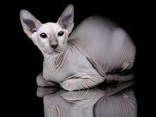

канадський сфінкс
Вважають, що лисі кішки були відомі ацтекам. Наприкінці XIX століття в Мексиці зустрічалися такі кішки й називалися мексиканською безшерстою. Однак вони не збереглися. У 1966 році в Онтаріо (Канада) серед кошенят нормальної домашньої кішки було виявлене безшерсте кошеня. Однак первісне розведення кішок цієї породи зазнало невдачі. Порода була нечисленною, і заводчики не мали досвіду з розведення лисих тварин. У 1975 році в штаті Міннесота, у Вадені, від короткошерстої звичайної кішки народився лисий кіт, а пізніше така ж кішка. Вони потрапили в розплідник у штаті Орегон, де й поклали початок основним лініям канадських сфінксів. Знайдені голі кошенята на вулицях Торонто наприкінці 70-х років XX ст., поблизу місця виявлення перших сфінксів, були відправлені в Голландію, де стали засновниками європейської лінії породи. І європейські, й американські лінії схрещували як зі сфінксами, так і з девон рексами. Девони виявилися єдиною породою, при схрещуванні з якою вже в першому поколінні народжувалися лисі кошенята. Нових лисих кішок, знайдених у приплодах короткошерстих, дуже цінують і намагаються максимально використати для розведення. Порода визнана багатьма фелінологічними організаціями США: TICA, ACFA й іншими. Сьогодні більшість сфінксів реєструється в TICA. Канадські сфінкси мають округлені, плавні лінії тіла, що надає їм подібності з порцеляновими статуетками. Можливо, за це їх ще називають місячною кішкою.
докладніше